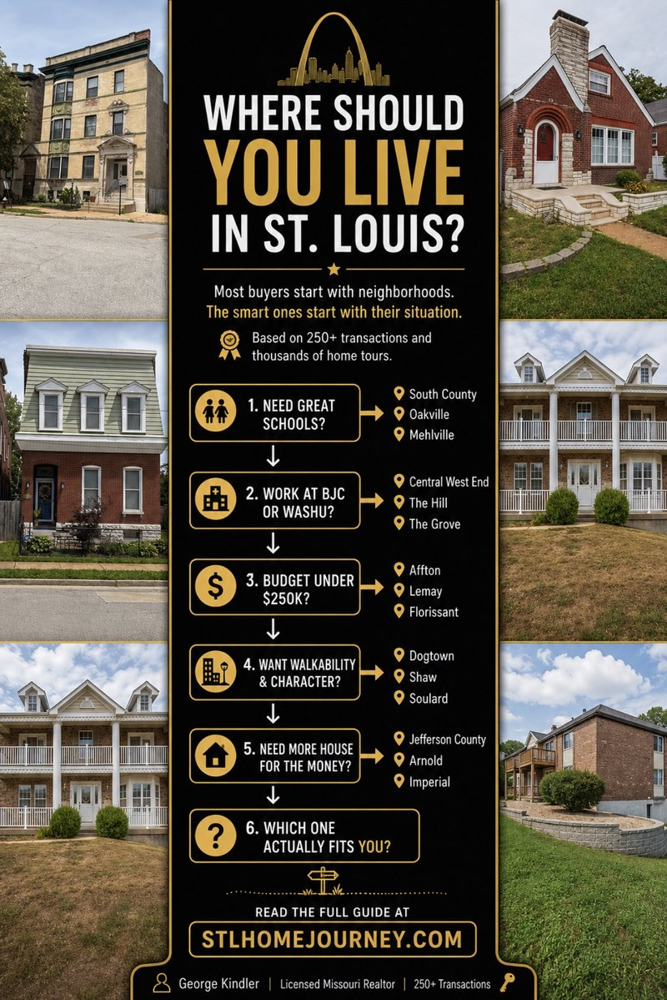

STL Home Journey
George Kindler
Buyer education for St. Louis homebuyers
Most "best places to live" lists tell you what's expensive and what's popular. Neither one tells you whether the area fits your budget, your commute, or what you're actually optimizing for.

Most buyers looking at St. Louis are really asking one question underneath all the others: where can I live without regretting the tradeoff? Because every area has one. This guide exists to name them honestly so you can decide which one you can actually live with.
West County gives you schools, prestige, and larger suburban neighborhoods — but the price moves fast. South County gives you more practical affordability, strong commute access, and established neighborhoods — but you need to understand school district lines and ZIP code differences. South City gives you character, walkability, and older brick homes — but condition and parking vary street by street. Jefferson County gives you more house and land for the money — but commute and resale patterns are different. St. Charles County gives you newer suburban growth — but it may not feel connected to the rest of St. Louis depending on where you work.
This guide is not here to tell you one area is the best. It is here to help you figure out which St. Louis area fits your budget, commute, lifestyle, and long-term plans.
Most buyers say they want a good location, good schools, a safe area, enough space, a reasonable commute, and a payment they can handle. That sounds simple until you realize those priorities compete with each other. If you want the strongest school district, you may pay more for less house. If you want more house, you may move farther out. If you want walkability, you may give up garage space or yard size. If you want a newer home, you may end up outside the older inner-ring suburbs. If you want the lowest payment, you may need to look at areas other buyers are overlooking.
That is why "where should I live in St. Louis?" is not one question. It is usually one of these: Where can I afford the kind of house I actually want? Where is the commute still reasonable? Which school district premium is worth paying? Where can I buy without becoming house poor? Which area fits my lifestyle now and still makes sense in five years?
Payment, taxes, insurance, and maintenance all factor in. A cheaper house with major repairs may not actually be cheaper.
Open the STL Affordability Tool →South County is one of the most practical places to start if you want a balance of price, commute, schools, and home size. It is not one single market. Oakville, Mehlville, Affton, Concord, Lemay, Crestwood, Green Park, and Sunset Hills all get grouped together as "South County" but they do not attract the exact same buyer. That is where people make mistakes.
South County often makes sense if you want a more affordable alternative to West County, access to I-55, I-270, and South City, established neighborhoods instead of brand-new subdivisions, ranch homes, split foyers, brick homes, and 1970s–1990s suburban housing, school options without automatically jumping into the highest-priced districts, or a location that still feels connected to the city.
The reason South County works for a lot of buyers is that it gives you options. You can look at Affton if you want an older, more affordable inner-ring feel. You can look at Oakville if you want more traditional suburban neighborhoods. You can look at Crestwood if Lindbergh Schools are a priority. You can look at Concord if you want South County location but need to be careful about school district boundaries. You can look at Lemay if budget matters more than prestige.
South County is a strong fit for buyers who want a practical, livable area without chasing the most expensive name on the map. It tends to work well for first-time buyers who want to stay in St. Louis County, move-up buyers who need more space, families comparing school districts, buyers who work downtown, in South City, or along I-55 and I-270, people who want a yard, driveway, garage, and a normal suburban layout, buyers priced out of Kirkwood, Webster Groves, or parts of West County, and renters trying to transition into ownership without overextending.
South County is not always the flashiest choice. That is part of the appeal. A lot of buyers are not trying to win a lifestyle contest. They are trying to buy a house that works.
The biggest tradeoff is that buyers need to pay attention to boundaries. ZIP codes, school districts, municipalities, and neighborhood names do not always line up cleanly. Two homes can feel similar, sit close together, and still have different school assignments, different price expectations, and different resale demand.
Concord is one of the best examples of this. A buyer may think they are shopping one area, but the actual value can change depending on whether the property falls into Lindbergh or Mehlville. That does not mean one is automatically better. It means you need to understand what you are paying for before you make an offer. Read the Lindbergh vs. Mehlville guide before you shop that corridor.
South County also has a wide range of housing conditions. Some homes are move-in ready. Some are clean but dated. Some need major systems, sewer work, drainage improvements, or cosmetic updates. The affordable house is not always affordable after inspections. Use the neighborhood guides and affordability tool before assuming the lower price is the better deal.
West County is where a lot of buyers look when they want schools, larger suburban communities, and stronger name recognition. Kirkwood, Webster Groves, Chesterfield, Ballwin, Manchester, Creve Coeur, Wildwood, Town and Country, and Des Peres all carry different versions of the West County premium. But the premium is real.
West County may make sense if you want highly recognized school districts, larger suburban neighborhoods, stronger move-up and luxury inventory, established resale demand, executive relocation appeal, larger homes and higher-end subdivisions, or access to major west county employment corridors. But the tradeoff is obvious — you usually pay more. Sometimes a lot more.
For buyers with strong income, West County can be a great fit. For buyers stretching to get there, it can become uncomfortable fast. The mistake is assuming that if you can technically qualify, you should automatically buy there. A buyer who would be comfortable in South County may become house poor in West County. A buyer who wants walkability may prefer Webster or Kirkwood over Chesterfield. A buyer who wants space may prefer Wildwood or Ballwin over the inner-ring options.
This is one of the most important comparisons for St. Louis buyers. South County usually wins on practical affordability. West County usually wins on prestige, school reputation, and higher-end inventory.
The better question is not "Is South County better than West County?" The better question is: which tradeoff would bother you less five years from now? Would you rather have the better-known district and a tighter payment? Or the more comfortable payment and a slightly less hyped location? That answer depends on the buyer. If schools are driving the decision, read the Lindbergh vs. Mehlville comparison before you anchor on any district name.
South City is a completely different decision. Buyers who love South City usually want character — brick homes, walkable pockets, parks, restaurants, older architecture, and neighborhoods with identity. South City may make sense if you want older brick homes, walkability, parks and neighborhood restaurants, lower entry prices than many county suburbs, a city lifestyle without being downtown, or access to South County, Tower Grove, Forest Park, or major highways.
But South City requires a different kind of buyer awareness. Condition matters more. Parking matters more. Basements, sewer lines, roofs, tuck-pointing, and old systems matter more. And unlike South County or West County, school district variation is not usually the same decision driver — St. Louis Public Schools. So price differences often come from neighborhood identity, park access, architecture, condition, and name recognition. South City rewards buyers who understand block-level differences.
Entry points worth comparing: Princeton Heights for South City brick character at a lower price point, and Patch for buyers who want the South City feel with a quieter residential identity.
The Central Corridor is the closest thing St. Louis has to a true urban residential core. The Central West End sits at the center of it. Dense apartment buildings, historic Beaux-Arts architecture, high-rise condos, converted mansions, brick townhouses, and direct access to Forest Park give the CWE a completely different feel than most of the region. By St. Louis standards, it is one of the most walkable places to live. Restaurants, coffee shops, grocery stores, bars, medical campuses, and Forest Park itself are all packed into a relatively small area. Buyers working for BJC, WashU Medicine, or nearby research and academic institutions often end up here because the location eliminates a commute almost entirely.
The tradeoff is price and complexity. The Central West End carries some of the highest per-square-foot pricing in the city, especially for renovated condos and fee-simple townhouses. Buyers are not paying for school access. They are paying for proximity, density, architecture, and lifestyle. Parking becomes a real issue depending on the building. HOA structures matter. Condo reserve funds matter. Special assessments matter. Older buildings can have significant monthly fees, and buyers need to understand exactly what those fees are covering before assuming a condo is cheaper than a house.
Forest Park Southeast and The Grove are the practical alternative for buyers who want the same urban energy without paying full CWE pricing. Manchester Avenue drives the commercial corridor, but most of the actual housing sits behind it in older pre-war brick residential blocks. Prices are lower than the CWE, but the same St. Louis Public Schools tradeoff still applies. Buyers choosing this corridor are usually prioritizing lifestyle, commute, restaurants, nightlife, hospitals, or proximity to Forest Park over school districts and large suburban lots.
If you want a yard, a three-car garage, and a quiet suburban subdivision, this is not your market. If you want to walk to dinner after work, live near Forest Park, and stay close to WashU or BJC, stop reading and start looking at the Central Corridor.
Jefferson County is where many St. Louis buyers look when they want more house, more land, or a lower payment. Arnold, Imperial, Festus, Hillsboro, Barnhart, and surrounding areas can give buyers options that are harder to find inside St. Louis County.
Jefferson County may make sense if you want more house for the money, a larger lot, you are open to a longer commute, you want lower density, you are priced out of parts of South County, or you do not need to be close to central St. Louis every day. The tradeoff is commute and market behavior. Homes may be farther apart. Comparable sales can be harder to analyze. Condition and acreage can vary more. And depending on where you work, the drive can become a real quality-of-life issue. Jefferson County can be a great move — but you need to be honest about whether you are buying space or buying a commute you will resent later.
St. Charles County attracts buyers who want newer suburban growth, schools, subdivisions, and access to west and northwest employment corridors. It may make sense if you work west or northwest of the city, want newer construction options, want suburban shopping, parks, and planned communities, or are comparing school districts across the river.
The tradeoff is location identity. For some buyers, St. Charles feels perfect. For others, it feels disconnected from the version of St. Louis they actually use. If your family, church, work, restaurants, and daily life are all in South County or the city, St. Charles may look good on paper but feel inconvenient in real life. That is not a criticism — it is just something to be honest about before you commit.
Start with South County. Look at Oakville, Mehlville, Affton, Concord, Crestwood, Green Park, and Lemay depending on budget and school priorities. Read the South County neighborhood price guide before you tour anything.
For WashU and BJC employees, the Central West End is the closest residential option and the most direct lifestyle fit if commute matters more than yard size. Many buyers working in medicine, research, or academics choose the CWE specifically because they can walk, bike, or stay within a few minutes of the hospital corridor. The Grove and Forest Park Southeast work as the practical alternative — buyers usually get lower entry pricing while still staying close enough to avoid the longer county commutes. The tradeoff is that both areas still fall under SLPS, and the housing stock shifts more toward older brick homes and smaller urban lots compared to suburban alternatives.
Look at West County and select South County areas carefully. Kirkwood, Webster Groves, Chesterfield, Ballwin, and parts of the Lindbergh corridor often come up in these conversations. But do not just chase the district name — look at the monthly payment, property condition, commute, and how much house you are giving up for that district. Read the Lindbergh vs. Mehlville school district guide.
Compare South County and Jefferson County first. South County may keep you closer to the city. Jefferson County may give you more space. The right answer depends on your honest commute tolerance — not the best-case commute, the worst-case one.
Look at South City, Webster Groves, Kirkwood, Maplewood, and select inner-ring suburbs. Walkability often comes with older housing stock, tighter parking, and higher competition in the most recognizable pockets. Budget for condition and systems, not just the purchase price.
When buyers talk about walkability in St. Louis, they are usually talking about two completely different experiences. General South City walkability means neighborhood restaurants, corner bars, parks, and local business districts spread across residential areas. The Central West End and The Grove are different. They function more like true urban corridors, with denser residential housing, larger commercial concentration, and more daily life happening on foot. The Central West End is the premium version with higher condo pricing, more established residential density, and direct Forest Park adjacency. The Grove and Forest Park Southeast give buyers a similar energy at a lower entry point while still keeping them close to the same hospital and university corridor.
South County and West County both make sense, but for different reasons. South County is a practical place to rent if you are testing affordability, commute, and school district fit before buying. West County can make sense for executive relocation clients or families testing school districts before committing to a higher price point. Do not just pick the nicest apartment — pick the area you may actually want to own in later.
Your budget may decide your area before your preference does. A buyer at $250K is not shopping the same St. Louis as a buyer at $450K. A buyer at $650K is not making the same tradeoffs as a buyer at $325K. That is why broad "best places to live" lists are usually not very helpful. The better question is: best for whom, at what price, with what commute, and what school priorities?
The point is not to chase the most expensive area. The point is to find the area where your budget gives you the most acceptable tradeoff. Read the $100K income affordability guide if you want to run that math honestly before you start shopping.
If you want the most balanced starting point, start with South County. If you want the strongest prestige and school-driven suburban options and your budget supports it, compare West County. If you want character, parks, restaurants, and older brick homes, look at South City and inner-ring suburbs. If you want more house and space, compare Jefferson County. If you want newer suburban growth and west/northwest access, look at St. Charles County.
There is no universal best place to live in St. Louis. There is only the best fit for your budget, lifestyle, commute, and long-term plan. And that is where most buyers should start — not with a list, but with a framework.
What is the best area to live in St. Louis?
There is no single best area for everyone. South County is often a practical balance of affordability and commute access. West County is stronger for higher-budget school-driven buyers. South City offers character and walkability. Jefferson County offers more space and lower prices. St. Charles County offers newer suburban growth with west and northwest employment access.
Is South County a good place to live?
South County can be a strong fit for buyers who want affordability, established neighborhoods, reasonable commute access, and multiple school district options without paying the full West County premium. Oakville, Mehlville, Affton, Crestwood, Concord, and Lemay all serve different buyer needs within South County.
Is West County better than South County?
West County is usually more expensive and often stronger for buyers prioritizing highly recognized school districts and higher-end suburban inventory. South County is often more practical for buyers who want a lower payment, more house for the money, and access to South City and I-55. The better question is which tradeoff you can live with long-term.
Where should first-time buyers look in St. Louis?
First-time buyers often start with South County, South City, Jefferson County, and select parts of St. Charles depending on budget, commute, loan type, and condition tolerance. In South County, Affton, Lemay, and parts of Mehlville have the most accessible entry-level inventory.
Should I rent before buying in St. Louis?
Renting before buying can make sense if you are relocating, testing a school district, or learning commute patterns before committing to a neighborhood. But if you already know the area and can afford the payment comfortably, buying may allow you to start building equity sooner.
Answer 7 questions about your lifestyle, commute, and priorities. The Neighborhood Matcher scores you against every major St. Louis area.
Open Neighborhood Matcher →
If you are trying to decide between South County, West County, South City, Jefferson County, or St. Charles, I can help you think through the tradeoffs before you start chasing homes. No pressure — just a real conversation about budget, commute, schools, condition, and what each area actually gives up.